API#
scanspec#
The top level scanspec module contains a number of packages that can be used from code:
scanspec.core: Core classes like
FramesandPathscanspec.specs:
Specand its subclassesscanspec.regions:
Regionand its subclassesscanspec.plot:
plot_specto visualize a scanscanspec.service: Defines queries and field structure in REST such as
MidpointsResponse
- scanspec.__version__: str#
Version number as calculated by dls-controls/versiongit
scanspec.core#
- scanspec.core.if_instance_do(x: Any, cls: Type, func: Callable)[source]#
If x is of type cls then return func(x), otherwise return NotImplemented.
Used as a helper when implementing operator overloading.
- class scanspec.core.Axis#
A type variable for an Axis that can be specified for a scan
alias of TypeVar(‘Axis’)
- scanspec.core.AxesPoints#
Map of axes to float ndarray of points E.g. {xmotor: array([0, 1, 2]), ymotor: array([2, 2, 2])}
- class scanspec.core.Frames(midpoints: AxesPoints[Axis], lower: AxesPoints[Axis] | None = None, upper: AxesPoints[Axis] | None = None, gap: np.ndarray | None = None)[source]#
-
Represents a series of scan frames along a number of axes.
During a scan each axis will traverse lower-midpoint-upper for each frame.
- Parameters:
midpoints – The midpoints of scan frames for each axis
lower – Lower bounds of scan frames if different from midpoints
upper – Upper bounds of scan frames if different from midpoints
gap – If supplied, define if there is a gap between frame and previous otherwise it is calculated by looking at lower and upper bounds
Typically used in two ways:
A list of Frames objects returned from
Spec.calculaterepresents a scan as a linear stack of frames. Interpreted as nested from slowest moving to fastest moving, so each faster Frames object will iterate once per position of the slower Frames object. It is passed to aPathfor calculation of the actual scan path.A single Frames object returned from
Path.consumerepresents a chunk of frames forming part of a scan path, for interpretation by the code that will actually perform the scan.
See also
- midpoints#
The midpoints of scan frames for each axis
- lower#
The lower bounds of each scan frame in each axis for fly-scanning
- upper#
The upper bounds of each scan frame in each axis for fly-scanning
- gap#
Whether there is a gap between this frame and the previous. First element is whether there is a gap between the last frame and the first
- extract(indices: ndarray, calculate_gap=True) Frames[Axis][source]#
Return a new Frames object restricted to the indices provided.
- Parameters:
indices – The indices of the frames to extract, modulo scan length
calculate_gap – If True then recalculate the gap from upper and lower
>>> frames = Frames({"x": np.array([1, 2, 3])}) >>> frames.extract(np.array([1, 0, 1])).midpoints {'x': array([2, 1, 2])}
- concat(other: Frames[Axis], gap: bool = False) Frames[Axis][source]#
Return a new Frames object concatenating self and other.
Requires both Frames objects to have the same axes, but not necessarily in the same order. The order is inherited from self, so other may be reordered.
- Parameters:
other – The Frames to concatenate to self
gap – Whether to force a gap between the two Frames objects
>>> frames = Frames({"x": np.array([1, 2, 3]), "y": np.array([6, 5, 4])}) >>> frames2 = Frames({"y": np.array([3, 2, 1]), "x": np.array([4, 5, 6])}) >>> frames.concat(frames2).midpoints {'x': array([1, 2, 3, 4, 5, 6]), 'y': array([6, 5, 4, 3, 2, 1])}
- zip(other: Frames[Axis]) Frames[Axis][source]#
Return a new Frames object merging self and other.
Require both Frames objects to not share axes.
>>> fx = Frames({"x": np.array([1, 2, 3])}) >>> fy = Frames({"y": np.array([5, 6, 7])}) >>> fx.zip(fy).midpoints {'x': array([1, 2, 3]), 'y': array([5, 6, 7])}
- class scanspec.core.SnakedFrames(midpoints: AxesPoints[Axis], lower: AxesPoints[Axis] | None = None, upper: AxesPoints[Axis] | None = None, gap: np.ndarray | None = None)[source]#
-
Like a
Framesobject, but each alternate repetition will run in reverse.- classmethod from_frames(frames: Frames[Axis]) SnakedFrames[Axis][source]#
Create a snaked version of a
Framesobject.
- extract(indices: ndarray, calculate_gap=True) Frames[Axis][source]#
Return a new Frames object restricted to the indices provided.
- Parameters:
indices – The indices of the frames to extract, can extend past len(self)
calculate_gap – If True then recalculate the gap from upper and lower
>>> frames = SnakedFrames({"x": np.array([1, 2, 3])}) >>> frames.extract(np.array([0, 1, 2, 3, 4, 5])).midpoints {'x': array([1, 2, 3, 3, 2, 1])}
- scanspec.core.gap_between_frames(frames1: Frames[Axis], frames2: Frames[Axis]) bool[source]#
Is there a gap between end of frames1 and start of frames2.
- scanspec.core.squash_frames(stack: List[Frames[Axis]], check_path_changes=True) Frames[Axis][source]#
Squash a stack of nested Frames into a single one.
- Parameters:
stack – The Frames stack to squash, from slowest to fastest moving
check_path_changes – If True then check that nesting the output Frames object within others will provide the same path as nesting the input Frames stack within others
>>> fx = SnakedFrames({"x": np.array([1, 2])}) >>> fy = Frames({"y": np.array([3, 4])}) >>> squash_frames([fy, fx]).midpoints {'y': array([3, 3, 4, 4]), 'x': array([1, 2, 2, 1])}
- class scanspec.core.Path(stack: List[Frames[Axis]], start: int = 0, num: int | None = None)[source]#
-
A consumable route through a stack of Frames, representing a scan path.
- Parameters:
stack – The Frames stack describing the scan, from slowest to fastest moving
start – The index of where in the Path to start
num – The number of scan frames to produce after start. None means up to the end
See also
- stack#
The Frames stack describing the scan, from slowest to fastest moving
- index#
Index that is next to be consumed
- lengths#
The lengths of all the stack
- end_index#
Index of the end frame, one more than the last index that will be produced
- consume(num: int | None = None) Frames[Axis][source]#
Consume at most num frames from the Path and return as a Frames object.
>>> fx = SnakedFrames({"x": np.array([1, 2])}) >>> fy = Frames({"y": np.array([3, 4])}) >>> path = Path([fy, fx]) >>> path.consume(3).midpoints {'y': array([3, 3, 4]), 'x': array([1, 2, 2])} >>> path.consume(3).midpoints {'y': array([4]), 'x': array([1])} >>> path.consume(3).midpoints {'y': array([], dtype=int64), 'x': array([], dtype=int64)}
- class scanspec.core.Midpoints(stack: List[Frames[Axis]])[source]#
-
Convenience iterable that produces the scan midpoints for each axis.
For better performance, consume from a
Pathinstead.- Parameters:
stack – The stack of Frames describing the scan, from slowest to fastest moving
See also
>>> fx = SnakedFrames({"x": np.array([1, 2])}) >>> fy = Frames({"y": np.array([3, 4])}) >>> mp = Midpoints([fy, fx]) >>> for p in mp: print(p) {'y': 3, 'x': 1} {'y': 3, 'x': 2} {'y': 4, 'x': 2} {'y': 4, 'x': 1}
- stack#
The stack of Frames describing the scan, from slowest to fastest moving
- scanspec.core.discriminated_union_of_subclasses(super_cls: Type | None = None, *, discriminator: str = 'type', config: Type[BaseConfig] | None = None) Type | Callable[[Type], Type][source]#
Add all subclasses of super_cls to a discriminated union.
For all subclasses of super_cls, add a discriminator field to identify the type. Raw JSON should look like {“type”: <type name>, params for <type name>…}. Add validation methods to super_cls so it can be parsed by pydantic.parse_obj_as.
Example:
@discriminated_union_of_subclasses class Expression(ABC): @abstractmethod def calculate(self) -> int: ... @dataclass class Add(Expression): left: Expression right: Expression def calculate(self) -> int: return self.left.calculate() + self.right.calculate() @dataclass class Subtract(Expression): left: Expression right: Expression def calculate(self) -> int: return self.left.calculate() - self.right.calculate() @dataclass class IntLiteral(Expression): value: int def calculate(self) -> int: return self.value my_sum = Add(IntLiteral(5), Subtract(IntLiteral(10), IntLiteral(2))) assert my_sum.calculate() == 13 assert my_sum == parse_obj_as( Expression, { "type": "Add", "left": {"type": "IntLiteral", "value": 5}, "right": { "type": "Subtract", "left": {"type": "IntLiteral", "value": 10}, "right": {"type": "IntLiteral", "value": 2}, }, }, )
- Parameters:
super_cls – The superclass of the union, Expression in the above example
discriminator – The discriminator that will be inserted into the serialized documents for type determination. Defaults to “type”.
config – A pydantic config class to be inserted into all subclasses. Defaults to None.
- Returns:
- A decorator that adds the necessary
functionality to a class.
- Return type:
Union[Type, Callable[[Type], Type]]
scanspec.specs#
- scanspec.specs.DURATION = 'DURATION'#
Can be used as a special key to indicate how long each point should be
- class scanspec.specs.Spec[source]#
-
A serializable representation of the type and parameters of a scan.
Abstract baseclass for the specification of a scan. Supports operators:
*: OuterProductof two Specs, nesting the second within the first. If the first operand is an integer, wrap it in aRepeat&:Maskthe Spec with aRegion, excluding midpoints outside of it~:Snakethe Spec, reversing every other iteration of it
- axes() List[Axis][source]#
Return the list of axes that are present in the scan.
Ordered from slowest moving to fastest moving.
- calculate(bounds=True, nested=False) List[Frames[Axis]][source]#
Produce a stack of nested
Framesthat form the scan.Ordered from slowest moving to fastest moving.
- class scanspec.specs.Product(outer: Spec[Axis] = FieldInfo(default=PydanticUndefined, description='Will be executed once', extra={}), inner: Spec[Axis] = FieldInfo(default=PydanticUndefined, description='Will be executed len(outer) times', extra={}), type: Literal['Product'] = 'Product')[source]#
-
Outer product of two Specs, nesting inner within outer.
This means that inner will run in its entirety at each point in outer.
# Example Spec from scanspec.plot import plot_spec from scanspec.specs import Line spec = Line("y", 1, 2, 3) * Line("x", 3, 4, 12) plot_spec(spec)
(
Source code,png,hires.png,pdf)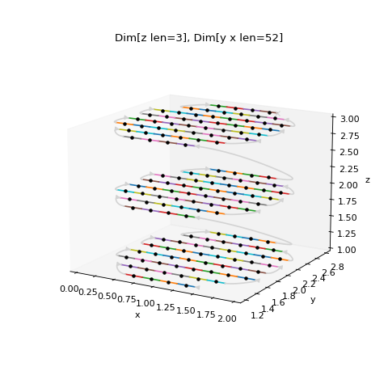
{kind=link}
{kind=link}
- class scanspec.specs.Repeat(num: int = FieldInfo(default=PydanticUndefined, description='Number of frames to produce', extra={'min': 1}), gap: bool = FieldInfo(default=True, description='If False and the slowest of the stack of Frames is snaked then the end and start of consecutive iterations of Spec will have no gap', extra={}), type: Literal['Repeat'] = 'Repeat')[source]#
-
Repeat an empty frame num times.
Can be used on the outside of a scan to repeat the same scan many times.
# Example Spec from scanspec.plot import plot_spec from scanspec.specs import Line spec = 2 * ~Line.bounded("x", 3, 4, 1) plot_spec(spec)
(
Source code,png,hires.png,pdf)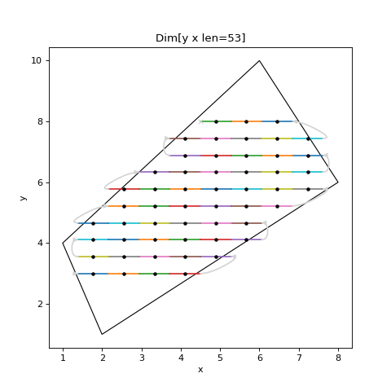 If you want snaked axes to have no gap between iterations you can do:
# Example Spec from scanspec.plot import plot_spec from scanspec.specs import Line, Repeat spec = Repeat(2, gap=False) * ~Line.bounded("x", 3, 4, 1) plot_spec(spec)
(
Source code,png,hires.png,pdf)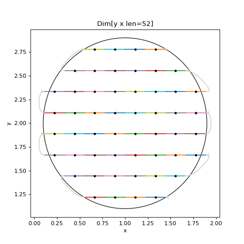 Note
There is no turnaround arrow at x=4
{kind=link}
{kind=link}
{kind=link}
{kind=link}
- class scanspec.specs.Zip(left: Spec[Axis] = FieldInfo(default=PydanticUndefined, description='The left-hand Spec to Zip, will appear earlier in axes', extra={}), right: Spec[Axis] = FieldInfo(default=PydanticUndefined, description='The right-hand Spec to Zip, will appear later in axes', extra={}), type: Literal['Zip'] = 'Zip')[source]#
-
Run two Specs in parallel, merging their midpoints together.
Typically formed using
Spec.zip.Stacks of Frames are merged by:
If right creates a stack of a single Frames object of size 1, expand it to the size of the fastest Frames object created by left
Merge individual Frames objects together from fastest to slowest
This means that Zipping a Spec producing stack [l2, l1] with a Spec producing stack [r1] will assert len(l1)==len(r1), and produce stack [l2, l1.zip(r1)].
# Example Spec from scanspec.plot import plot_spec from scanspec.specs import Line spec = Line("z", 1, 2, 3) * Line("y", 3, 4, 5).zip(Line("x", 4, 5, 5)) plot_spec(spec)
(
Source code,png,hires.png,pdf)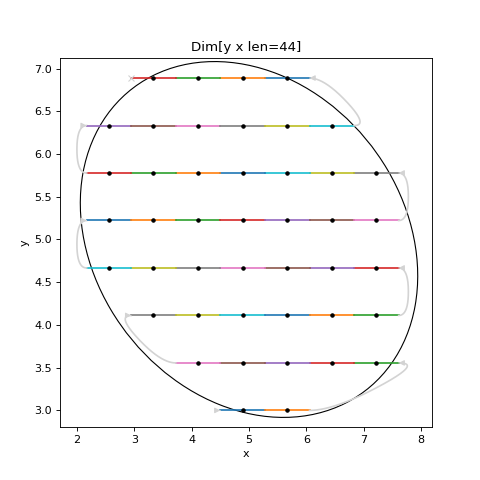
{kind=link}
{kind=link}
- class scanspec.specs.Mask(spec: Spec[Axis] = FieldInfo(default=PydanticUndefined, description='The Spec containing the source midpoints', extra={}), region: Region[Axis] = FieldInfo(default=PydanticUndefined, description='The Region that midpoints will be inside', extra={}), check_path_changes: bool = FieldInfo(default=True, description='If True path through scan will not be modified by squash', extra={}), type: Literal['Mask'] = 'Mask')[source]#
-
Restrict Spec to only midpoints that fall inside the given Region.
Typically created with the
&operator. It also pushes down the& | ^ -operators to itsRegionto avoid the need for brackets on combinations of Regions.If a Region spans multiple Frames objects, they will be squashed together.
# Example Spec from scanspec.plot import plot_spec from scanspec.regions import Circle from scanspec.specs import Line spec = Line("y", 1, 3, 3) * Line("x", 3, 5, 5) & Circle("x", "y", 4, 2, 1.2) plot_spec(spec)
(
Source code,png,hires.png,pdf)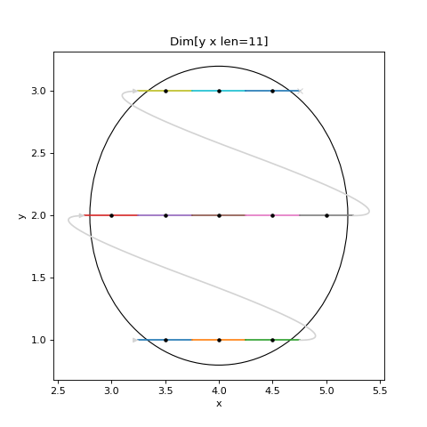
{kind=link}
{kind=link}
- class scanspec.specs.Snake(spec: Spec[Axis] = FieldInfo(default=PydanticUndefined, description='The Spec to run in reverse every other iteration', extra={}), type: Literal['Snake'] = 'Snake')[source]#
-
Run the Spec in reverse on every other iteration when nested.
Typically created with the
~operator.# Example Spec from scanspec.plot import plot_spec from scanspec.specs import Line spec = Line("y", 1, 3, 3) * ~Line("x", 3, 5, 5) plot_spec(spec)
(
Source code,png,hires.png,pdf)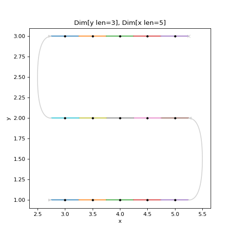
{kind=link}
{kind=link}
- class scanspec.specs.Concat(left: Spec[Axis] = FieldInfo(default=PydanticUndefined, description='The left-hand Spec to Concat, midpoints will appear earlier', extra={}), right: Spec[Axis] = FieldInfo(default=PydanticUndefined, description='The right-hand Spec to Concat, midpoints will appear later', extra={}), gap: bool = FieldInfo(default=False, description='If True, force a gap in the output at the join', extra={}), check_path_changes: bool = FieldInfo(default=True, description='If True path through scan will not be modified by squash', extra={}), type: Literal['Concat'] = 'Concat')[source]#
-
Concatenate two Specs together, running one after the other.
Each Dimension of left and right must contain the same axes. Typically formed using
Spec.concat.# Example Spec from scanspec.plot import plot_spec from scanspec.specs import Line spec = Line("x", 1, 3, 3).concat(Line("x", 4, 5, 5)) plot_spec(spec)
(
Source code,png,hires.png,pdf)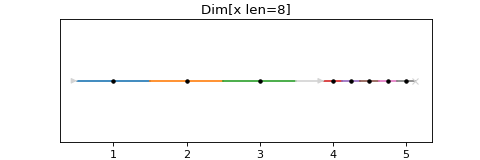
{kind=link}
{kind=link}
- class scanspec.specs.Squash(spec: Spec[Axis] = FieldInfo(default=PydanticUndefined, description='The Spec to squash the dimensions of', extra={}), check_path_changes: bool = FieldInfo(default=True, description='If True path through scan will not be modified by squash', extra={}), type: Literal['Squash'] = 'Squash')[source]#
-
Squash a stack of Frames together into a single expanded Frames object.
# Example Spec from scanspec.plot import plot_spec from scanspec.specs import Line, Squash spec = Squash(Line("y", 1, 2, 3) * Line("x", 0, 1, 4)) plot_spec(spec)
(
Source code,png,hires.png,pdf)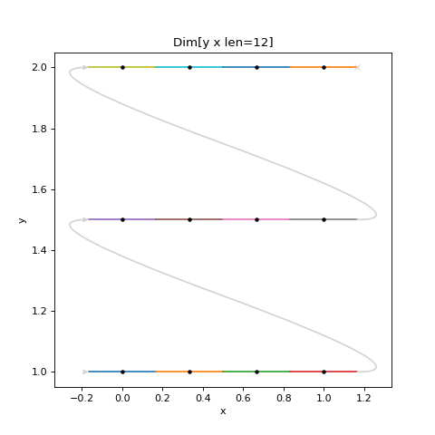
{kind=link}
{kind=link}
- class scanspec.specs.Line(axis: Axis = FieldInfo(default=PydanticUndefined, description='An identifier for what to move', extra={}), start: float = FieldInfo(default=PydanticUndefined, description='Midpoint of the first point of the line', extra={}), stop: float = FieldInfo(default=PydanticUndefined, description='Midpoint of the last point of the line', extra={}), num: int = FieldInfo(default=PydanticUndefined, description='Number of frames to produce', extra={'min': 1}), type: Literal['Line'] = 'Line')[source]#
-
Linearly spaced frames with start and stop as first and last midpoints.
# Example Spec from scanspec.plot import plot_spec from scanspec.specs import Line spec = Line("x", 1, 2, 5) plot_spec(spec)
(
Source code,png,hires.png,pdf)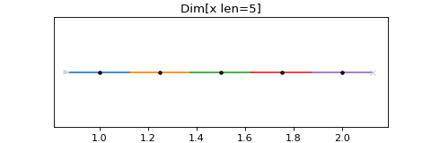 - classmethod bounded(axis: Axis = FieldInfo(default=PydanticUndefined, description='An identifier for what to move', extra={}), lower: float = FieldInfo(default=PydanticUndefined, description='Lower bound of the first point of the line', extra={}), upper: float = FieldInfo(default=PydanticUndefined, description='Upper bound of the last point of the line', extra={}), num: int = FieldInfo(default=PydanticUndefined, description='Number of frames to produce', extra={'min': 1})) Line[Axis][source]#
Specify a Line by extreme bounds instead of midpoints.
# Example Spec from scanspec.plot import plot_spec from scanspec.specs import Line spec = Line.bounded("x", 1, 2, 5) plot_spec(spec)
(
Source code,png,hires.png,pdf)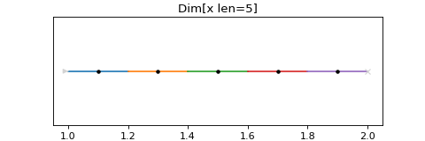
{kind=link}
{kind=link}
{kind=link}
{kind=link}
- class scanspec.specs.Static(axis: Axis = FieldInfo(default=PydanticUndefined, description='An identifier for what to move', extra={}), value: float = FieldInfo(default=PydanticUndefined, description='The value at each point', extra={}), num: int = FieldInfo(default=1, description='Number of frames to produce', extra={'min': 1}), type: Literal['Static'] = 'Static')[source]#
-
A static frame, repeated num times, with axis at value.
Can be used to set axis=value at every point in a scan.
# Example Spec from scanspec.plot import plot_spec from scanspec.specs import Line, Static spec = Line("y", 1, 2, 3).zip(Static("x", 3)) plot_spec(spec)
(
Source code,png,hires.png,pdf)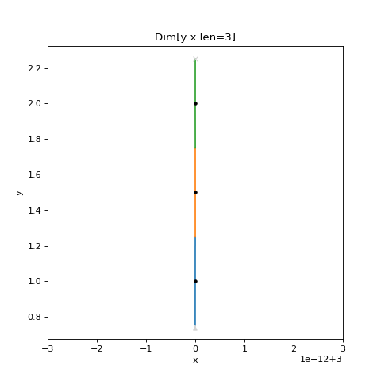 - classmethod duration(duration: float = FieldInfo(default=PydanticUndefined, description='The duration of each static point', extra={}), num: int = FieldInfo(default=1, description='Number of frames to produce', extra={'min': 1})) Static[str][source]#
A static spec with no motion, only a duration repeated “num” times.
# Example Spec from scanspec.plot import plot_spec from scanspec.specs import Line, Static spec = Line("y", 1, 2, 3).zip(Static.duration(0.1)) plot_spec(spec)
(
Source code,png,hires.png,pdf)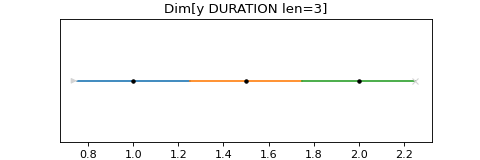
{kind=link}
{kind=link}
{kind=link}
{kind=link}
- class scanspec.specs.Spiral(x_axis: Axis = FieldInfo(default=PydanticUndefined, description='An identifier for what to move for x', extra={}), y_axis: Axis = FieldInfo(default=PydanticUndefined, description='An identifier for what to move for y', extra={}), x_start: float = FieldInfo(default=PydanticUndefined, description='x centre of the spiral', extra={}), y_start: float = FieldInfo(default=PydanticUndefined, description='y centre of the spiral', extra={}), x_range: float = FieldInfo(default=PydanticUndefined, description='x width of the spiral', extra={}), y_range: float = FieldInfo(default=PydanticUndefined, description='y width of the spiral', extra={}), num: int = FieldInfo(default=PydanticUndefined, description='Number of frames to produce', extra={'min': 1}), rotate: float = FieldInfo(default=0.0, description='How much to rotate the angle of the spiral', extra={}), type: Literal['Spiral'] = 'Spiral')[source]#
-
Archimedean spiral of “x_axis” and “y_axis”.
Starts at centre point (“x_start”, “y_start”) with angle “rotate”. Produces “num” points in a spiral spanning width of “x_range” and height of “y_range”
# Example Spec from scanspec.plot import plot_spec from scanspec.specs import Spiral spec = Spiral("x", "y", 1, 5, 10, 50, 30) plot_spec(spec)
(
Source code,png,hires.png,pdf)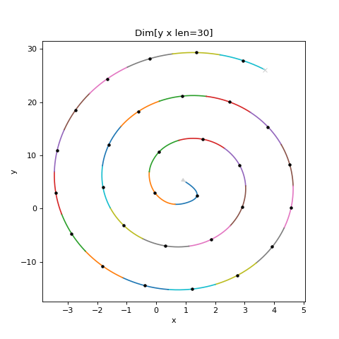 - classmethod spaced(x_axis: Axis = FieldInfo(default=PydanticUndefined, description='An identifier for what to move for x', extra={}), y_axis: Axis = FieldInfo(default=PydanticUndefined, description='An identifier for what to move for y', extra={}), x_start: float = FieldInfo(default=PydanticUndefined, description='x centre of the spiral', extra={}), y_start: float = FieldInfo(default=PydanticUndefined, description='y centre of the spiral', extra={}), radius: float = FieldInfo(default=PydanticUndefined, description='radius of the spiral', extra={}), dr: float = FieldInfo(default=PydanticUndefined, description='difference between each ring', extra={}), rotate: float = FieldInfo(default=0.0, description='How much to rotate the angle of the spiral', extra={})) Spiral[Axis][source]#
Specify a Spiral equally spaced in “x_axis” and “y_axis”.
# Example Spec from scanspec.plot import plot_spec from scanspec.specs import Spiral spec = Spiral.spaced("x", "y", 0, 0, 10, 3) plot_spec(spec)
(
Source code,png,hires.png,pdf)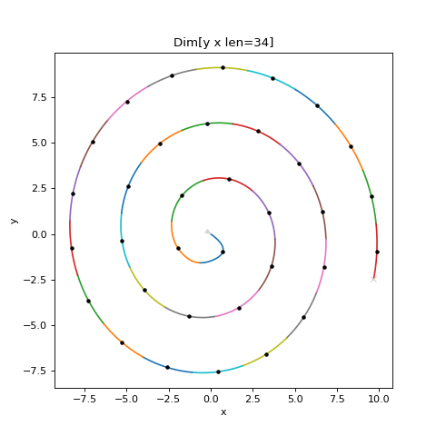
{kind=link}
{kind=link}
{kind=link}
{kind=link}
- scanspec.specs.fly(spec: Spec[Axis], duration: float) Spec[Axis][source]#
Flyscan, zipping with fixed duration for every frame.
- Parameters:
spec – The source
Specto continuously moveduration – How long to spend at each frame in the spec
# Example Spec from scanspec.plot import plot_spec from scanspec.specs import Line, fly spec = fly(Line("x", 1, 2, 3), 0.1) plot_spec(spec)
(
Source code,png,hires.png,pdf)
{kind=link}
{kind=link}
- scanspec.specs.step(spec: Spec[Axis], duration: float, num: int = 1) Spec[Axis][source]#
Step scan, with num frames of given duration at each frame in the spec.
- Parameters:
spec – The source
Specwith midpoints to move to and stopduration – The duration of each scan frame
num – Number of frames to produce with given duration at each of frame in the spec
# Example Spec from scanspec.plot import plot_spec from scanspec.specs import Line, step spec = step(Line("x", 1, 2, 3), 0.1) plot_spec(spec)
(
Source code,png,hires.png,pdf)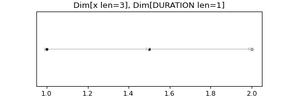
{kind=link}
{kind=link}
scanspec.regions#
- class scanspec.regions.Region[source]#
-
Abstract baseclass for a Region that can
MaskaSpec.Supports operators:
|:UnionOftwo Regions, midpoints present in either&:IntersectionOftwo Regions, midpoints present in both-:DifferenceOftwo Regions, midpoints present in first not second^:SymmetricDifferenceOftwo Regions, midpoints present in one not both
- scanspec.regions.get_mask(region: Region[Axis], points: AxesPoints[Axis]) np.ndarray[source]#
Return a mask of the points inside the region.
If there is an overlap of axes of region and points return a mask of the points in the region, otherwise return all ones
- class scanspec.regions.CombinationOf(left: Region[Axis] = FieldInfo(default=PydanticUndefined, description='The left-hand Region to combine', extra={}), right: Region[Axis] = FieldInfo(default=PydanticUndefined, description='The right-hand Region to combine', extra={}), type: Literal['CombinationOf'] = 'CombinationOf')[source]#
-
Abstract baseclass for a combination of two regions, left and right.
- class scanspec.regions.UnionOf(left: Region[Axis] = FieldInfo(default=PydanticUndefined, description='The left-hand Region to combine', extra={}), right: Region[Axis] = FieldInfo(default=PydanticUndefined, description='The right-hand Region to combine', extra={}), type: Literal['UnionOf'] = 'UnionOf')[source]#
Bases:
CombinationOf[Axis]A point is in UnionOf(a, b) if in either a or b.
Typically created with the
|operator>>> r = Range("x", 0.5, 2.5) | Range("x", 1.5, 3.5) >>> r.mask({"x": np.array([0, 1, 2, 3, 4])}) array([False, True, True, True, False])
- class scanspec.regions.IntersectionOf(left: Region[Axis] = FieldInfo(default=PydanticUndefined, description='The left-hand Region to combine', extra={}), right: Region[Axis] = FieldInfo(default=PydanticUndefined, description='The right-hand Region to combine', extra={}), type: Literal['IntersectionOf'] = 'IntersectionOf')[source]#
Bases:
CombinationOf[Axis]A point is in IntersectionOf(a, b) if in both a and b.
Typically created with the
&operator.>>> r = Range("x", 0.5, 2.5) & Range("x", 1.5, 3.5) >>> r.mask({"x": np.array([0, 1, 2, 3, 4])}) array([False, False, True, False, False])
- class scanspec.regions.DifferenceOf(left: Region[Axis] = FieldInfo(default=PydanticUndefined, description='The left-hand Region to combine', extra={}), right: Region[Axis] = FieldInfo(default=PydanticUndefined, description='The right-hand Region to combine', extra={}), type: Literal['DifferenceOf'] = 'DifferenceOf')[source]#
Bases:
CombinationOf[Axis]A point is in DifferenceOf(a, b) if in a and not in b.
Typically created with the
-operator.>>> r = Range("x", 0.5, 2.5) - Range("x", 1.5, 3.5) >>> r.mask({"x": np.array([0, 1, 2, 3, 4])}) array([False, True, False, False, False])
- class scanspec.regions.SymmetricDifferenceOf(left: Region[Axis] = FieldInfo(default=PydanticUndefined, description='The left-hand Region to combine', extra={}), right: Region[Axis] = FieldInfo(default=PydanticUndefined, description='The right-hand Region to combine', extra={}), type: Literal['SymmetricDifferenceOf'] = 'SymmetricDifferenceOf')[source]#
Bases:
CombinationOf[Axis]A point is in SymmetricDifferenceOf(a, b) if in either a or b, but not both.
Typically created with the
^operator.>>> r = Range("x", 0.5, 2.5) ^ Range("x", 1.5, 3.5) >>> r.mask({"x": np.array([0, 1, 2, 3, 4])}) array([False, True, False, True, False])
- class scanspec.regions.Range(axis: Axis = FieldInfo(default=PydanticUndefined, description='The name matching the axis to mask in spec', extra={}), min: float = FieldInfo(default=PydanticUndefined, description='The minimum inclusive value in the region', extra={}), max: float = FieldInfo(default=PydanticUndefined, description='The minimum inclusive value in the region', extra={}), type: Literal['Range'] = 'Range')[source]#
-
Mask contains points of axis >= min and <= max.
>>> r = Range("x", 1, 2) >>> r.mask({"x": np.array([0, 1, 2, 3, 4])}) array([False, True, True, False, False])
- class scanspec.regions.Rectangle(x_axis: Axis = FieldInfo(default=PydanticUndefined, description='The name matching the x axis of the spec', extra={}), y_axis: Axis = FieldInfo(default=PydanticUndefined, description='The name matching the y axis of the spec', extra={}), x_min: float = FieldInfo(default=PydanticUndefined, description='Minimum inclusive x value in the region', extra={}), y_min: float = FieldInfo(default=PydanticUndefined, description='Minimum inclusive y value in the region', extra={}), x_max: float = FieldInfo(default=PydanticUndefined, description='Maximum inclusive x value in the region', extra={}), y_max: float = FieldInfo(default=PydanticUndefined, description='Maximum inclusive y value in the region', extra={}), angle: float = FieldInfo(default=0.0, description='Clockwise rotation angle of the rectangle', extra={}), type: Literal['Rectangle'] = 'Rectangle')[source]#
-
Mask contains points of axis within a rotated xy rectangle.
# Example Spec from scanspec.plot import plot_spec from scanspec.regions import Rectangle from scanspec.specs import Line grid = Line("y", 1, 3, 10) * ~Line("x", 0, 2, 10) spec = grid & Rectangle("x", "y", 0, 1.1, 1.5, 2.1, 30) plot_spec(spec)
(
Source code,png,hires.png,pdf)
- class scanspec.regions.Polygon(x_axis: Axis = FieldInfo(default=PydanticUndefined, description='The name matching the x axis of the spec', extra={}), y_axis: Axis = FieldInfo(default=PydanticUndefined, description='The name matching the y axis of the spec', extra={}), x_verts: List[float] = FieldInfo(default=PydanticUndefined, description='The Nx1 x coordinates of the polygons vertices', extra={'min_len': 3}), y_verts: List[float] = FieldInfo(default=PydanticUndefined, description='The Nx1 y coordinates of the polygons vertices', extra={'min_len': 3}), type: Literal['Polygon'] = 'Polygon')[source]#
-
Mask contains points of axis within a rotated xy polygon.
# Example Spec from scanspec.plot import plot_spec from scanspec.regions import Polygon from scanspec.specs import Line grid = Line("y", 3, 8, 10) * ~Line("x", 1 ,8, 10) spec = grid & Polygon("x", "y", [1.0, 6.0, 8.0, 2.0], [4.0, 10.0, 6.0, 1.0]) plot_spec(spec)
(
Source code,png,hires.png,pdf)
- class scanspec.regions.Circle(x_axis: Axis = FieldInfo(default=PydanticUndefined, description='The name matching the x axis of the spec', extra={}), y_axis: Axis = FieldInfo(default=PydanticUndefined, description='The name matching the y axis of the spec', extra={}), x_middle: float = FieldInfo(default=PydanticUndefined, description='The central x point of the circle', extra={}), y_middle: float = FieldInfo(default=PydanticUndefined, description='The central y point of the circle', extra={}), radius: float = FieldInfo(default=PydanticUndefined, description='Radius of the circle', extra={'exc_min': 0}), type: Literal['Circle'] = 'Circle')[source]#
-
Mask contains points of axis within an xy circle of given radius.
# Example Spec from scanspec.plot import plot_spec from scanspec.regions import Circle from scanspec.specs import Line grid = Line("y", 1, 3, 10) * ~Line("x", 0, 2, 10) spec = grid & Circle("x", "y", 1, 2, 0.9) plot_spec(spec)
(
Source code,png,hires.png,pdf)
- class scanspec.regions.Ellipse(x_axis: Axis = FieldInfo(default=PydanticUndefined, description='The name matching the x axis of the spec', extra={}), y_axis: Axis = FieldInfo(default=PydanticUndefined, description='The name matching the y axis of the spec', extra={}), x_middle: float = FieldInfo(default=PydanticUndefined, description='The central x point of the ellipse', extra={}), y_middle: float = FieldInfo(default=PydanticUndefined, description='The central y point of the ellipse', extra={}), x_radius: float = FieldInfo(default=PydanticUndefined, description='The radius along the x axis of the ellipse', extra={'exc_min': 0}), y_radius: float = FieldInfo(default=PydanticUndefined, description='The radius along the y axis of the ellipse', extra={'exc_min': 0}), angle: float = FieldInfo(default=0.0, description='The angle of the ellipse (degrees)', extra={}), type: Literal['Ellipse'] = 'Ellipse')[source]#
-
Mask contains points of axis within an xy ellipse of given radius.
# Example Spec from scanspec.plot import plot_spec from scanspec.regions import Ellipse from scanspec.specs import Line grid = Line("y", 3, 8, 10) * ~Line("x", 1 ,8, 10) spec = grid & Ellipse("x", "y", 5, 5, 2, 3, 75) plot_spec(spec)
(
Source code,png,hires.png,pdf)
scanspec.plot#
- scanspec.plot.plot_spec(spec: Spec[Any])[source]#
Plot a spec, drawing the path taken through the scan.
Uses a different colour for each frame, grey for the turnarounds, and marks the midpoints with a filled circle if there are less than 200 of them. If the scan is 2D then 2D regions are shown in black.
# Example Spec from scanspec.plot import plot_spec from scanspec.specs import Line from scanspec.regions import Circle cube = Line("z", 1, 3, 3) * Line("y", 1, 3, 10) * ~Line("x", 0, 2, 10) spec = cube & Circle("x", "y", 1, 2, 0.9) plot_spec(spec)
(
Source code,png,hires.png,pdf)
scanspec.service#
- scanspec.service.Points#
A set of points, that can be returned in various formats
- class scanspec.service.ValidResponse(input_spec: Spec = FieldInfo(default=PydanticUndefined, description='The input scanspec', extra={}), valid_spec: Spec = FieldInfo(default=PydanticUndefined, description='The validated version of the spec', extra={}))[source]#
Bases:
objectResponse model for spec validation.
- class scanspec.service.PointsFormat(value, names=None, *, module=None, qualname=None, type=None, start=1, boundary=None)[source]#
-
Formats in which we can return points.
- class scanspec.service.PointsRequest(spec: ~scanspec.specs.Spec = FieldInfo(default=PydanticUndefined, description='The spec from which to generate points', extra={}), max_frames: int | None = FieldInfo(default=100000, description='The maximum number of points to return, if None will return as many as calculated', extra={}), format: ~scanspec.service.PointsFormat = FieldInfo(default=<PointsFormat.FLOAT_LIST: 'FLOAT_LIST'>, description='The format in which to output the points data', extra={}))[source]#
Bases:
objectA request for generated scan points.
- class scanspec.service.GeneratedPointsResponse(total_frames: int = FieldInfo(default=PydanticUndefined, description='Total number of frames in spec', extra={}), returned_frames: int = FieldInfo(default=PydanticUndefined, description='Total of number of frames in this response, may be less than total_frames due to downsampling etc.', extra={}), format: PointsFormat = FieldInfo(default=PydanticUndefined, description='Format of returned point data', extra={}))[source]#
Bases:
objectBase class for responses that include generated point data.
- class scanspec.service.MidpointsResponse(total_frames: int = FieldInfo(default=PydanticUndefined, description='Total number of frames in spec', extra={}), returned_frames: int = FieldInfo(default=PydanticUndefined, description='Total of number of frames in this response, may be less than total_frames due to downsampling etc.', extra={}), format: PointsFormat = FieldInfo(default=PydanticUndefined, description='Format of returned point data', extra={}), midpoints: Mapping[str, str | List[float]] = FieldInfo(default=PydanticUndefined, description='The midpoints of scan frames for each axis', extra={}))[source]#
Bases:
GeneratedPointsResponseMidpoints of a generated scan.
- class scanspec.service.BoundsResponse(total_frames: int = FieldInfo(default=PydanticUndefined, description='Total number of frames in spec', extra={}), returned_frames: int = FieldInfo(default=PydanticUndefined, description='Total of number of frames in this response, may be less than total_frames due to downsampling etc.', extra={}), format: PointsFormat = FieldInfo(default=PydanticUndefined, description='Format of returned point data', extra={}), lower: Mapping[str, str | List[float]] = FieldInfo(default=PydanticUndefined, description='Lower bounds of scan frames if different from midpoints', extra={}), upper: Mapping[str, str | List[float]] = FieldInfo(default=PydanticUndefined, description='Upper bounds of scan frames if different from midpoints', extra={}))[source]#
Bases:
GeneratedPointsResponseBounds of a generated scan.
- class scanspec.service.GapResponse(gap: List[bool] = FieldInfo(default=PydanticUndefined, description='Boolean array indicating if there is a gap between each frame', extra={}))[source]#
Bases:
objectPresence of gaps in a generated scan.
- class scanspec.service.SmallestStepResponse(absolute: float = FieldInfo(default=PydanticUndefined, description='Absolute smallest distance between two points on a single axis', extra={}), per_axis: Mapping[str, float] = FieldInfo(default=PydanticUndefined, description='Smallest distance between two points on each axis', extra={}))[source]#
Bases:
objectInformation about the smallest steps between points in a spec.
- scanspec.service.valid(spec: Spec = Body(Ellipsis)) ValidResponse | JSONResponse[source]#
Validate wether a ScanSpec can produce a viable scan.
- Parameters:
spec – The scanspec to validate
- Returns:
- A canonical version of the spec if it is valid.
An error otherwise.
- Return type:
- scanspec.service.midpoints(request: PointsRequest = Body(Ellipsis)) MidpointsResponse[source]#
Generate midpoints from a scanspec.
A scanspec can produce bounded points (i.e. a point is valid if an axis is between a minimum and and a maximum, see /bounds). The midpoints are the middle of each set of bounds.
- Parameters:
request – Scanspec and formatting info.
- Returns:
Midpoints of the scan
- Return type:
- scanspec.service.bounds(request: PointsRequest = Body(Ellipsis)) BoundsResponse[source]#
Generate bounds from a scanspec.
A scanspec can produce points with lower and upper bounds.
- Parameters:
request – Scanspec and formatting info.
- Returns:
Bounds of the scan
- Return type:
- scanspec.service.gap(spec: Spec = Body(Ellipsis)) GapResponse[source]#
Generate gaps from a scanspec.
A scanspec may indicate if there is a gap between two frames. The array returned corresponds to whether or not there is a gap after each frame.
- Parameters:
request – Scanspec and formatting info.
- Returns:
Bounds of the scan
- Return type:
- scanspec.service.smallest_step(spec: Spec = Body(Ellipsis)) SmallestStepResponse[source]#
Calculate the smallest step in a scan, both absolutely and per-axis.
Ignore any steps of size 0.
- Parameters:
spec – The spec of the scan
- Returns:
A description of the smallest steps in the spec
- Return type: